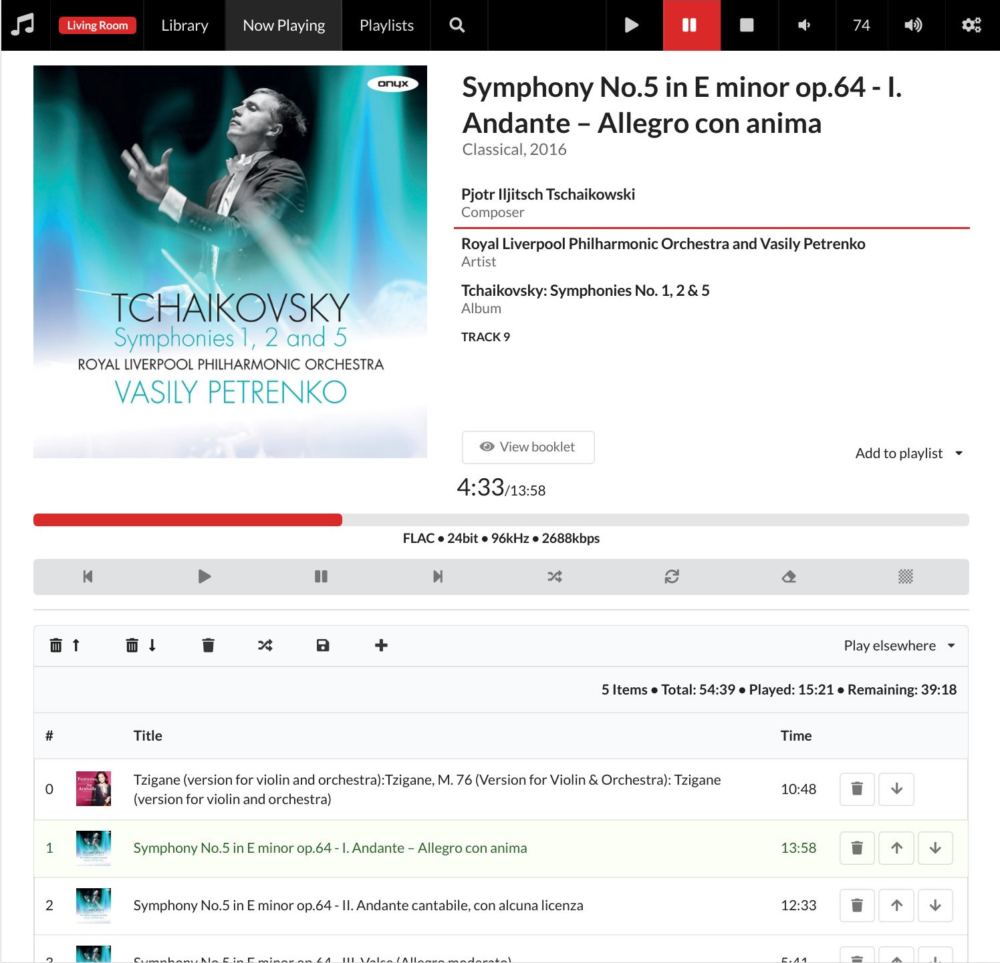

Player
A web application written in Elm that provides a simple frontend to
MPD. It uses the http module and communicates to MPD
via Websockets. It runs completely in the browser and only relies on
MPD commands and the additional cover
routes provided by mpc4s-http.

Why?
I know, there are many mpd clients already. The main motivation was to have the following features:
- album-centric: I want to choose an album to listen to
- cover/album art support
- support for multi disc albums
- support for multiple MPD connections
- make use of the composer tag
This is just to scratch my own itch: I tend to first choose an album to listen to (in contrast to randomly playing from a huge playlist); I have many multi-disc albums, mainly listening to classical music and use multiple MPDs (on raspberry pis) with the same music collection… I found many nice frontends, but I wanted something different :-). In this respect it is a rather opinionated frontend.
Prerequisites
In order to make it nice to work with, your music collection needs to be tagged properly. The following tags are used:
- Title
- Album
- Genre
- Composer
- Artist, Albumartist
- Date (a year)
- Disc
The first three are quite important, the rest is nice to have. The Disc tag is optional, obviously.
Cover art is quite important, since it is used exclusively to present
your albums. That means you should have cover art available next to
your music files. If the song uri is path/to/a/song.flac, then the
cover art is looked up at path/to/a/cover.jpg, for example. See
this for more information.
Getting it
You can download a zip or deb package.
Since this is just the http module packaged with an Elm application, see the configuration and install section of the http module for how to configure the server part.
The client settings can be changed in the web application. They are persisted in local storage of the browser.
The app is by default available at http://localhost:9600/player/ –
the trailing slash is important (for now). Multiple mpd connections
are supported and they can be changed in the settings page.
Credits
Big thanks to Semantic-UI and Elm. Pictures (e.g. not-found images) are taken from Unsplash. Photographers include: